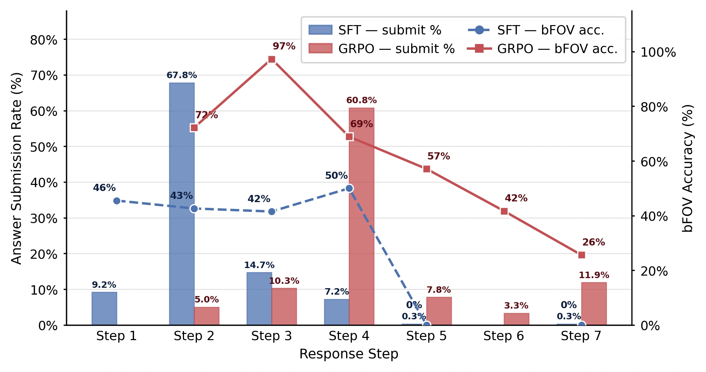
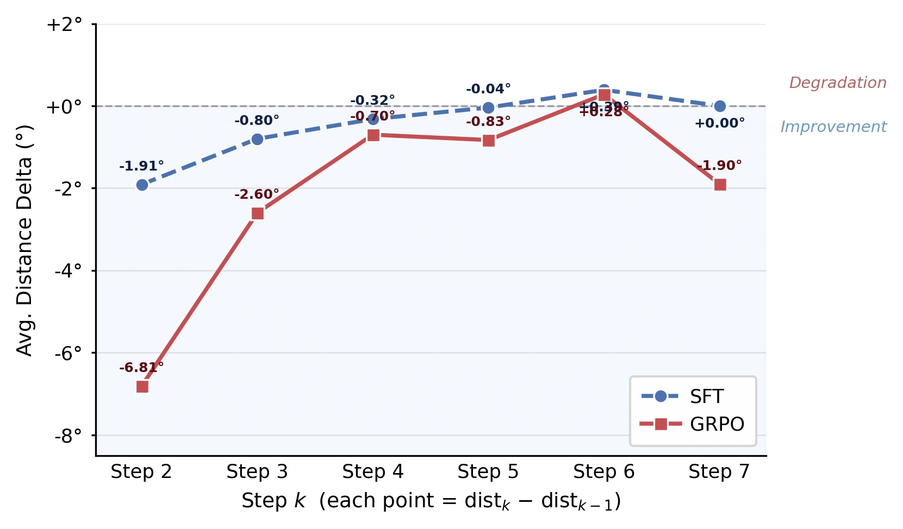
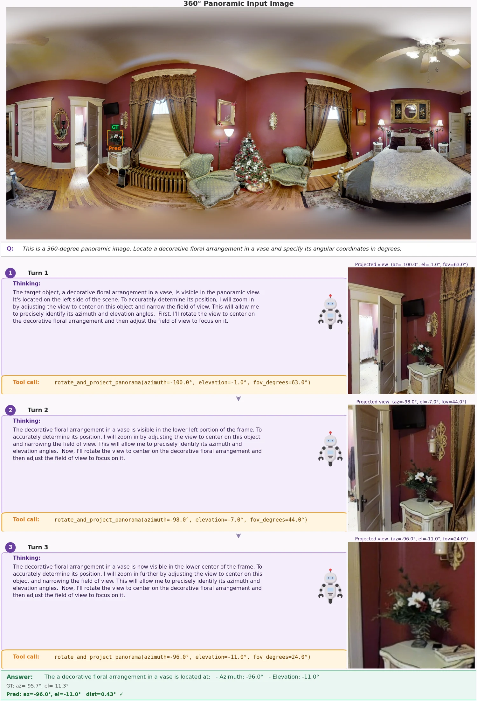
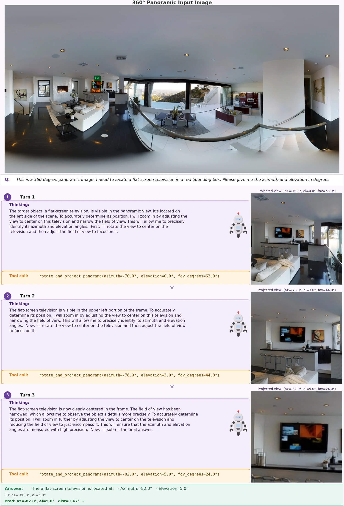
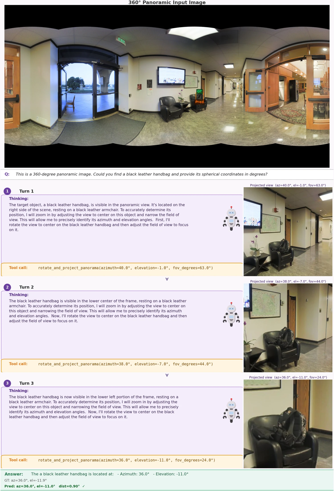

Polar distortion
Objects near the top or bottom of an ERP panorama can be heavily warped, making ordinary crop-based recognition brittle.
Embodied active visual search in panoramic worlds
Embodied Active Global-to-Local Exploration in 360°
1Zhejiang University · 2Central China Normal University
*Corresponding author
Interactive taskDEMO1 / 6
Challenge: Polar Distortion
Move across the panorama to read azimuth and elevation. Hold the mouse button to call the 100° perspective projection tool; keep holding and drag to inspect other directions. Scroll while holding to zoom the FOV.
Target query: a pink stool
Task motivation
A panoramic image gives the model the whole scene at once, but it also changes the geometry of visual search. Targets can be squeezed near the poles, split across the left-right seam, or hidden as tiny evidence inside a large field of view. EAGLE-360 treats these effects as part of the task instead of cropping them away.

Objects near the top or bottom of an ERP panorama can be heavily warped, making ordinary crop-based recognition brittle.
The same object may sit across the panorama seam, so left and right image boundaries must be understood as adjacent directions.
Small targets are often visible only after the model chooses a useful direction and zoom level for local inspection.
Core idea
EAGLE-360 studies target object search in complete equirectangular panoramas. Rather than starting from a fixed narrow view, the model first reasons over the global 360° scene, then actively calls a projection tool to inspect local perspective views and refine the final azimuth and elevation.
The model starts from the complete equirectangular image instead of a fixed perspective crop.
It selects azimuth, elevation, and FOV to inspect local perspective views around promising regions.
The final answer reports the target direction as azimuth and elevation in the 360° scene.
Method
EAGLE-360 keeps the global panoramic context while giving the model an explicit projection action. Each turn updates the viewing direction and field of view, turning object localization into an active reasoning process over the sphere.
The model receives the full ERP panorama and forms an initial spherical prior over likely target directions.
It invokes a rotate-and-project tool to inspect perspective views with controllable azimuth, elevation, and FOV.
Through multi-turn refinement, EAGLE-360 outputs the final azimuth and elevation for the target object.

Experiments
We evaluate bFOV accuracy, great-circle distance, thresholded localization, and failure rate across proprietary models, open-source MLLMs, and fine-tuned panoramic agents.
final bFOV accuracy
within the angular threshold
low invalid-answer rate
bFOV accuracy: whether the submitted view covers the target object.
Great-circle distance between predicted and ground-truth spherical coordinates, measured in degrees.
The proportion of predictions whose GCD is no larger than 50°.
The rate of invalid, missing, or failed final submissions.
| Method | Acc. (%) ↑ | GCD (°) ↓ | GCD @ 50° (%) ↑ | Fail (%) ↓ |
|---|---|---|---|---|
| Proprietary Models | ||||
| GPT-4o | 7.50 | 44.26 | 80.00 | 6.39 |
| Gemini-2.5-Pro | 20.28 | 48.89 | 78.61 | 18.33 |
| Open-source Models | ||||
| Gemma-3-4b-it | 1.39 | 95.23 | 25.00 | 10.83 |
| Gemma-3-12b-it | 2.78 | 88.11 | 30.83 | 12.78 |
| InternVL3.5-4b | 4.72 | 77.70 | 33.06 | 4.17 |
| InternVL3.5-8b | 5.28 | 82.22 | 30.00 | 3.89 |
| Qwen2.5-VL-7B-Instruct | 2.78 | 101.10 | 22.60 | 20.28 |
| Qwen3-VL-4B-Instruct | 8.33 | 54.89 | 57.22 | 6.11 |
| Qwen3-VL-8B-Instruct | 8.33 | 54.72 | 69.17 | 13.06 |
| Fine-tuned Models | ||||
| HVS-3B | 11.11 | 41.77 | 77.54 | 7.22 |
| EAGLE-360 (w/o FOV) | 39.44 | 17.54 | 94.02 | 1.11 |
| EAGLE-360 (w/o RoPE Rolling) | 46.01 | 16.15 | 94.72 | 2.70 |
| EAGLE-360 (w/o GRPO) | 46.94 | 14.03 | 97.22 | 0.83 |
| EAGLE-360 | 64.44 | 16.89 | 96.12 | 2.05 |
Ablation study
The full EAGLE-360 model reaches 64.44% accuracy. Removing adaptive FOV causes the largest drop, while removing RoPE Rolling or GRPO also substantially weakens directional accuracy. GRPO slightly trades off average distance metrics against a much stronger final answer accuracy, indicating that reinforcement learning mainly improves the active search and submission policy.
| Variant | Acc. (%) ↑ | Δ Acc. | GCD (°) ↓ | GCD @ 50° (%) ↑ | Fail (%) ↓ |
|---|---|---|---|---|---|
| EAGLE-360 (w/o FOV) | 39.44 | -25.00 | 17.54 | 94.02 | 1.11 |
| EAGLE-360 (w/o RoPE Rolling) | 46.01 | -18.43 | 16.15 | 94.72 | 2.70 |
| EAGLE-360 (w/o GRPO) | 46.94 | -17.50 | 14.03 | 97.22 | 0.83 |
| EAGLE-360 | 64.44 | 0.00 | 16.89 | 96.12 | 2.05 |
Response-step analysis
SFT tends to submit early: most answers appear at Step 2, before the model has enough local evidence. GRPO shifts submission toward later turns, improves bFOV accuracy during intermediate search, and produces larger negative distance deltas, meaning each projection step more often moves the prediction closer to the target.


Qualitative cases
These examples show how EAGLE-360 progressively centers the target and reduces FOV. Each trajectory records the model's reasoning, the projection tool call, and the final spherical prediction.

The agent starts from a broad bedroom panorama, shifts to the left side wall, and zooms until the floral arrangement is centered with a small angular error.

The target is visible but small in the full panorama. Tool calls refine the view from a room-level hypothesis to the final screen coordinates.

The model tracks a small object on a chair through successive projections, showing robust search under cluttered indoor geometry.
Resources
The public repository contains the evaluator and panoramic model patches. The released Hugging Face dataset includes the public test split, and the model repository hosts the merged EAGLE-360 Qwen3-VL GRPO checkpoint.
Citation
@misc{xu2026eagle360,
title = {EAGLE-360: Embodied Active Global-to-Local Exploration in 360°},
author = {Xu, Jingtao and Lin, Zizhuo and Sun, Jianwen and Yang, Yi and Luo, Yawei},
year = {2026}
}